| 1 | The input to this process is a file generated from EMScan's Databases / Database Utilities / Output Data in ASCII Format function. Such files are routinely generated by the regional councils and transmitted to EMSO. Generation of such files is beyond the scope of this document. To illustrate this process, we will work with an input file named:SAMPLE |
| 2 | Rename the input file to give it a .TXT
extension. You may perform the rename operation in Windows Explorer,
but this command in Command Prompt accomplishes the same thing:
rename SAMPLE SAMPLE.TXT |
| 3 | Download and unzip the following file:
|
| 4 | The preceding step should produce the
following file:
converted-emscan.mdb Double click on this file to open it in Microsoft Access 2002. |
| 5 | In MS Access, select File / Get External Data / Import.... |
| 6 | In the Import dialog box, change the Files
of Type: setting to Text Files (*.txt;*.csv;*.tab;*.asc).
Use the Look in: field to navigate to the folder containing the
input file. Select the input file and click the Import
button.
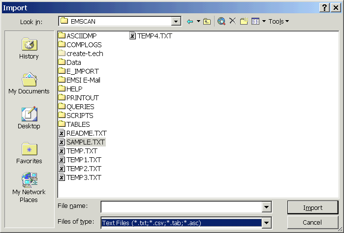 |
| 7 | In the Import Text Wizard dialog box,
choose the Fixed Width setting and click the Advanced...
button (not the Next> button).
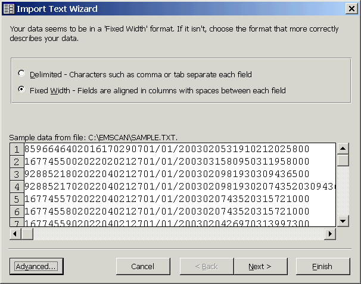 |
| 8 | In the Import Specification dialog box,
click the Specs... button.
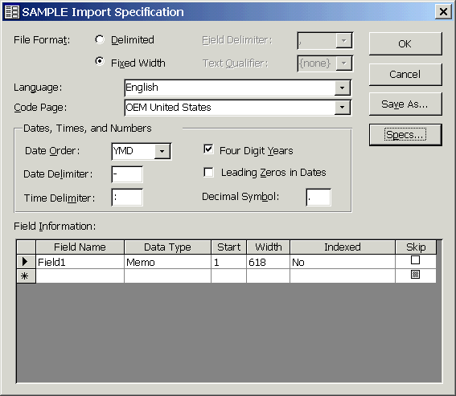 |
| 9 | In the Import/Export Specifications
dialog box, select EMSCAN-E Import Specification and click the Open
button.
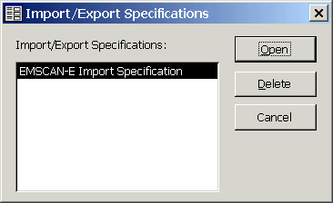 |
| 10 | Back in the Import Specification dialog
box, notice that the appropriate Field Information and other
settings are now indicated. Click the OK button.
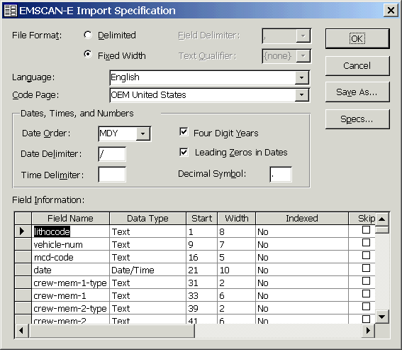 |
| 11 | Back in the Import Text Wizard dialog box, click the Next > button. |
| 12 | The indicated field breaks should not need any
adjustment. Click the Next > button.
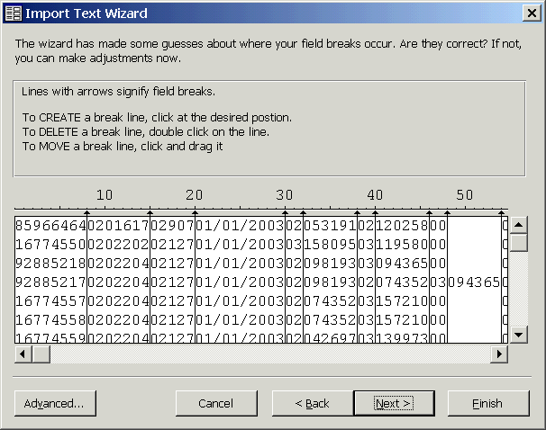 |
| 13 | In the next panel, answer the wizard's
question appropriately, then click the Next > button.
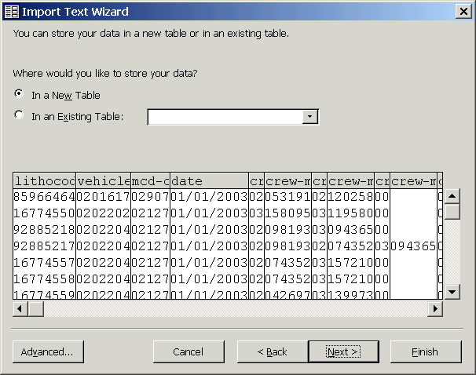 |
| 14 | In the next panel, the Field Options
should not need any modification. Click the Next > button.
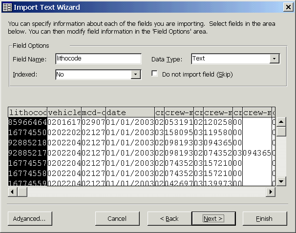 |
| 15 | In the next panel, select Choose my own
primary key, and make sure that the indicated primary key is the lithocode
field. Then click the Next > button.
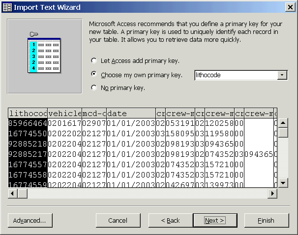 |
| 16 | If necessary, change the Import to Table:
field, then click the Finish button.
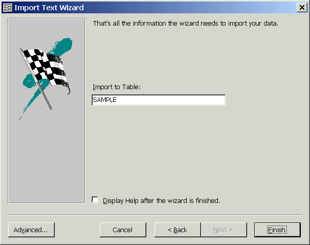 |
| 17 | Wait for the import to complete.
Depending on the size of your input file and your computer's capabilities,
this may take a long time.
You may see a warning about records that could not be imported. Read the warning carefully, then acknowledge it. When finished, you'll see a dialog box such as the following. Click the OK button. 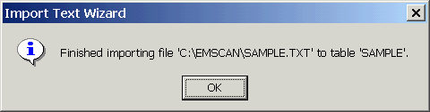 |
| 18 | The imported data should now appear as a table
in your MS Access database. You may operate on this table in the
usual fashion. Congratulations!
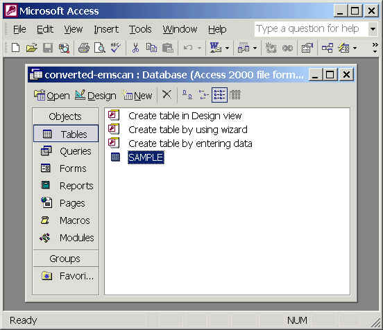 |